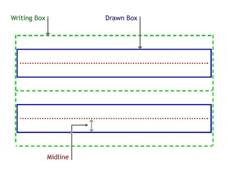
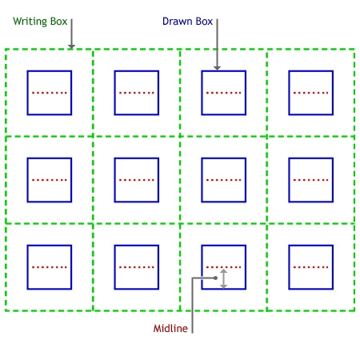

Not all applications require the use of recognition, but because most applications were designed with text as their primary data type, the ability to convert ink into text is very valuable. You can use the recognition features of the Tablet PC platform API to query for information about the recognition engines that are available, such as what languages they recognize. You can then send a Strokes collection from an Ink object to a recognition engine and have it return a RecognitionResult object.
A RecognizerContext object is the instantiation of a given recognizer. The RecognizerContext object enables you to recognize a given collection of strokes synchronously or asynchronously. When recognizing asynchronously, the RecognizerContext object returns the RecognitionResult object in an event callback to the application.
A single Tablet PC may have one or more recognizers available. You can query the recognizer's collection to determine which recognizer to use. A recognizer provides specific information about its capabilities such as the language it can recognize and the manufacturer.
To determine whether at least one recognizer is installed, instantiate an InkRecognizerContext object as shown in the following C++ and C# code examples. If a recognizer is not present, this call to CoCreateInstance fails.
CComPtr<IInkRecognizerContext> g_pIInkRecoContext;
hr = CoCreateInstance(CLSID_InkRecognizerContext,
NULL, CLSCTX_INPROC_SERVER,
IID_IInkRecognizerContext,
(void **) &g_pIInkRecoContext);
if (FAILED(hr))
{
::MessageBox(NULL, TEXT("No recognizers installed.\nExiting."),
gc_szAppName, MB_ICONERROR);
return -1;
}
try
{
Recognizers recos = new Recognizers();//Check for recognizer.
Recognizer defReco = recos.GetDefaultRecognizer();
recoContext = defReco.CreateRecognizerContext();
}
catch
{
MessageBox.Show("No recognizers installed.");
}
The results of the recognition are returned in a RecognitionResult object. The results contain a best result string in the TopString property, as well as a collection of alternative results in a RecognitionAlternates collection. The RecognitionResult object can be persisted with the original Strokes collection from which it was generated.
The recognizer guide can consist of rows and columns, and gives the recognizer a better context in which to perform recognition. For example, you can draw horizontal lines on a user's screen, almost like a ruled piece of paper, that show where handwriting should occur (this type of guide would consist only of rows, and no columns). If a user writes on the lines, instead of some arbitrary space, recognition accuracy improves.
The following illustration shows a RecognizerGuide structure with two lines for input.

The following illustration shows a RecognizerGuide structure with four columns and three rows.

For more information about using the RecognizerGuide structure, see the RecognizerGuide reference topic.
Â
Â